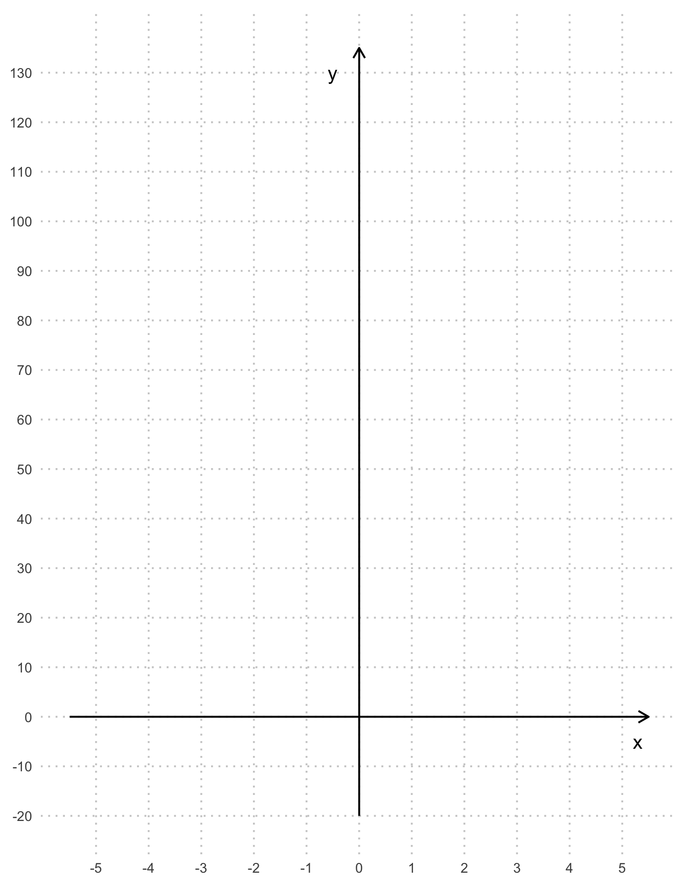
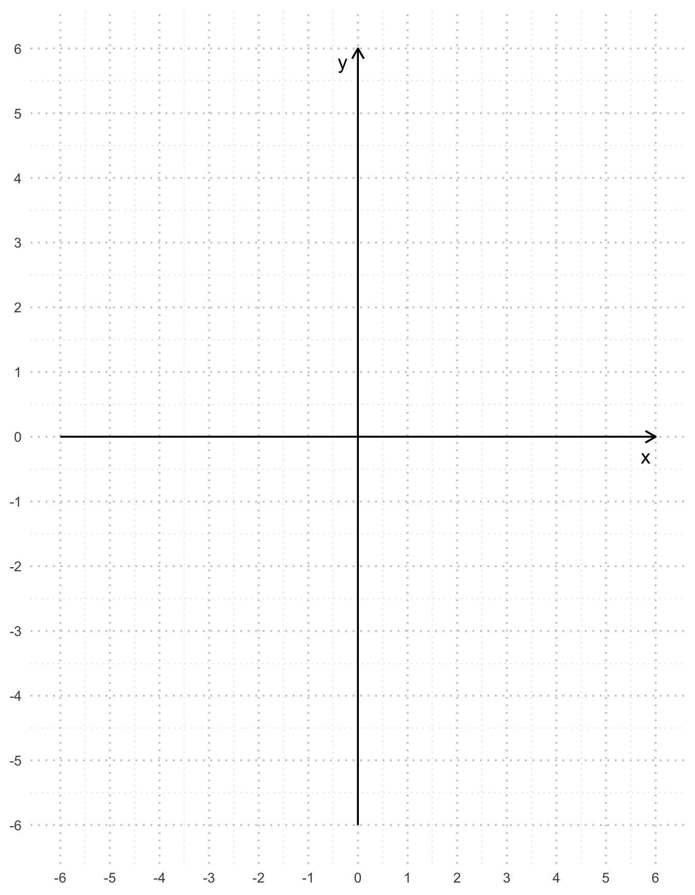
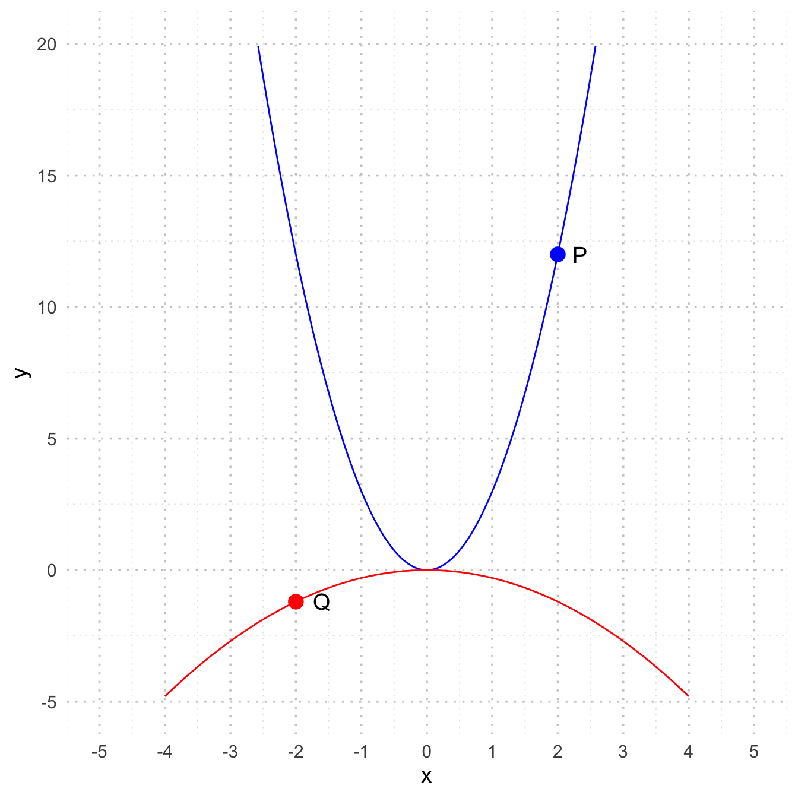
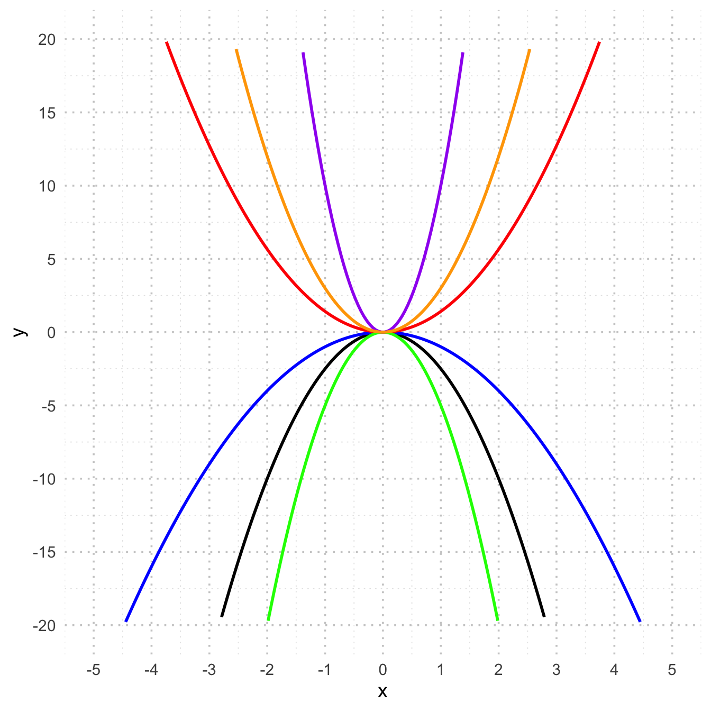

2 Quadratische Funktionen
2.1 Einleitung
Stellen sie sich vor, sie werfen einen Ball in die Luft. Was denken Sie: fliegt der Ball gerade nach oben und dann plötzlich senkrecht runter? Erfahrungsgemäss wird der Ball im Flug immer langsamer, bis er seinen höchsten Punkt erreicht und er dann wieder zum Boden beschleunigt. Es gibt keinen abrupten richtungswechsel, sondern eine graduell verlangsamte Geschwindigkeit.
Offensichtlich handelt es sich hier nicht um einen linearen Verlauf, wir sprechen in der Physik von einer parabel - oder hier im Mathematikunterricht von einer quadratischen Funktion.
Um die Tiefe eines Brunnens zu bestimmen, kann man einen Stein über dem Brunenn loslassen und die Zeit stoppen, bis der Stein auf dem Boden aufprallt. In der Physik werden sie das Beispiel bestimmt genauer behandeln, annähern kann man die Fallhöhe mit der Formel \[ s(t) = 5\cdot t^2 \] Dabei entsprechen die Fallhöhe in Meter \(s\) und die Zeit in Sekunden bis zum Aufprall \(t\).
Beispiel 1
Berechnen sie die tiefe des Brunnens für eine Fallzeit von \(t=1s\) und \(t=2s\). Fällt ihnen dabei etwas auf?
Für eine Funktion kann man eine Wertetabelle erstellen, oder in einem Koordinatensystem einen Funktionsgraphen zeichnen.
Beispiel 2
Erstellen sie eine Wertetabelle zur Funktion \(s(t) = 5\cdot t^2\) und zeichnen sie den entsprechenden Graphen ins Koordinatensystem. Überlegen sie, wie sie die einzelnen Punkte sinnvoll im Koordinatensystem verbinden können. Verwenden sie auch negative Werte für \(t\) (obwohl negative Zeitwerte für die Flugzeit natürlich nicht möglich sind).
| \(t_1\) | \(t_2\) | \(t_3\) | \(t_4\) | \(t_5\) | \(t_6\) | \(t_7\) | \(t_8\) | \(t_9\) | \(t_{10}\) | |
|---|---|---|---|---|---|---|---|---|---|---|
| \(t\) | ||||||||||
| \(s(t)\) |
2.2 Rein quadratische Funktionen
Den Ausdruck \(s(t)=5\cdot t^2\) nennt man eine rein quadratische Funktion.
Beispiel 3
Zeichnen Sie alle untenstehende rein quadtratische Funktionen ins selbe Koordinatensystem und beantworten sie anschliessend die Fragen.
| \(y=3x^2\) | \(y=-0.1x^2\) | \(y=-2.5x^2\) | \(y=-0.8x^2\) |
|---|---|---|---|
| \(y=-x^2\) | \(y=\frac{2}{5}x^2\) | \(y=1.2x^2\) | \(y=10x^2\) |
Sehen sie eine regelmässigkeit bei den Nullstellen (Schnittpunkt mit der \(x\)-Achse) der rein quatratischen Funktion? Begründen Sie Ihre Antwort mit der allgemeinen Form \(y=ax^2\)
Wie beeinflusst das Vorzeichen von a die Form der Parabel?
Die Parabel der Funktion \(f(x)=x^2\) (also mit \(a=1\)) nennt man Normalparabel. Wie verändert sich die Form der Parabel, wenn der Betrag von \(a\) grösser, bzw. kleiner als \(1\) ist im Vergleich zur Normalparabel?
In folgendem Fenster können sie interaktiv die rein quadratische Funktion und zur auffrischung auch die lineare Funktion erkunden:
Oben gefundene Eigenschaften lassen sich wie folgt zusammenfassen:
Beispiel 4a
Zeichnen Sie die Graphen der folgenden Funktionen in ein Koordinatensystem, ohne Wertetabelle:
| \(f(x)=x^2\) | \(g(x)=-2x^2\) | \(h(x)=\frac{1}{3}x^2\) |
|---|---|---|

Beispiel 4b
Liegen die Punkte \(P(5|10)\) und \(Q(-2|-\frac{8}{5})\) auf der Parabel mit der Gleichung \(f(x)=\frac{2}{5}x^2\)? Begründen sie ihre Antwort.
Beispiel 4c
Im Koordinatensystem sind zwei Parabeln der Form \(y=ax^2\) abgebildet. Bestimmen sie mit Hilfe der Punkte \(P\) und \(Q\) die Funktionsgleichung der Parabeln.

2.2.1 Aufgaben
- Welche der Punkte liegen auf der Parabel mit der Gleichung \(y=2.5x^2\)?
- \(A(2|10)\)
- \(B(-2|10)\)
- \(C(7|122)\)
- \(D(4|40)\)
- \(E(\sqrt{2}|5)\)
- \(F(\sqrt{6.25}|-1)\)
- \(G(0|2.5)\)
- \(H(-\sqrt{3}|-22.5)\)
- Bestimmen Sie die Funktionsgleichungen folgender Parabeln.

- Der Punkt \(P\) liegt jeweils auf dem Graphen der Funktion \(f(x)=\frac{3}{4}x^2\). Bestimmen sie die Fehlende Koordinate.
- \(P(4|y)\)
- \(P(x|3)\)
- \(P(-1.5|y)\)
- \(P(x|0)\)
- \(P(x|27)\)
- \(P(10|y)\)
- Der Graph einer rein quadratischen Funktion verläuft durch den Punkt \(P.\) Bestimmen sie die Funktionsgleichung und zeichnen sie den Graphen.
- \(P(1|3)\)
- \(P(2|-2)\)
- \(P(-4|-5)\)
- \(P(-3|27)\)